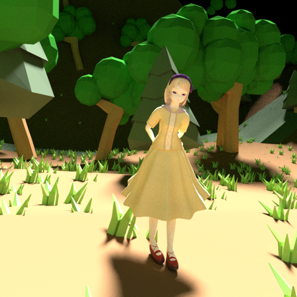

アリアンナさん
Lily-livered Maidenで公開されているデスクトップマスコット「アリアドネの糸」の二次創作モデルです。

利用規約
モデルの作者が「あやちぎん」であることを表示し、かつ非商用用途ならば自由です。

あやちぎん 作『アリアンナさん』はクリエイティブ・コモンズ 表示 - 非営利 4.0 国際 ライセンスで提供されています。
http://lilyreverd.web.fc2.com/にある作品に基づいている。
コピペ用表示
MMDモデル「アリアンナさん」
モデリング: あやちぎん(Twitter: @ayachigin, site: http://ayachigin.github.io/)
ゴースト「アリアドネの糸(http://lilyreverd.web.fc2.com/)」に基づいた二次創作モデルです
ダウンロード
更新履歴
2016年4月10日 公開
2016年4月16日 スカートとか目とか微調整